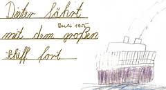
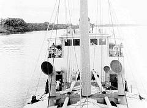
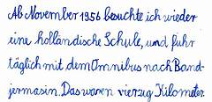
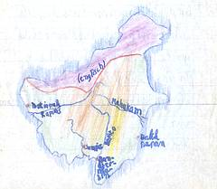

Lebenslauf Dieter (1958)
Zwei Monate blieben wir in Djakarta. Dann wurde Papi nach Sampit in Borneo versetzt, und wir fuhren mit der "Laiwui", einem kleinen KPM Dampfer nach dort. 
Im Januar 1956 ging ich dann nach 6 Monaten zum ersten Mal wieder in die Schule, und zwar in die zweite Klasse der S.N.O. Sampit. Das ist eine holländische Volksschule.
Im August desselben Jahres wurde ich in die dritte Klasse versetzt. Die Schule aber wurde aufgelöst ( weil die Holländer das Land endgültig verlassen mussten). Im November 1956 zogen wir wieder um, diesmal aber innerhalb von Kalimantan. Die Reise ging jedoch auch über das Meer (Straßen gab es von Sampit aus keine), und sie dauerte 1 1/2 Tage.
Ab November 1956 besuchte ich wieder eine holländische Schule, und fuhr täglich mit dem Omnibus nach Bandjermasin. Das waren vierzig Kilometer. Aber auch diese Schule wurde im Januar 1958 aufgelöst. ich war inzwischen in der vierten Klasse. Seit dieser Zeit gibt mir meine Mami Privatunterricht.
Während dieser Zeit war ich mit meinen Eltern des öfteren im Urlaub auf Java und Bali. Aber auch in Kalimantan selbst habe wir viel Interessantes gesehen und erlebt.
